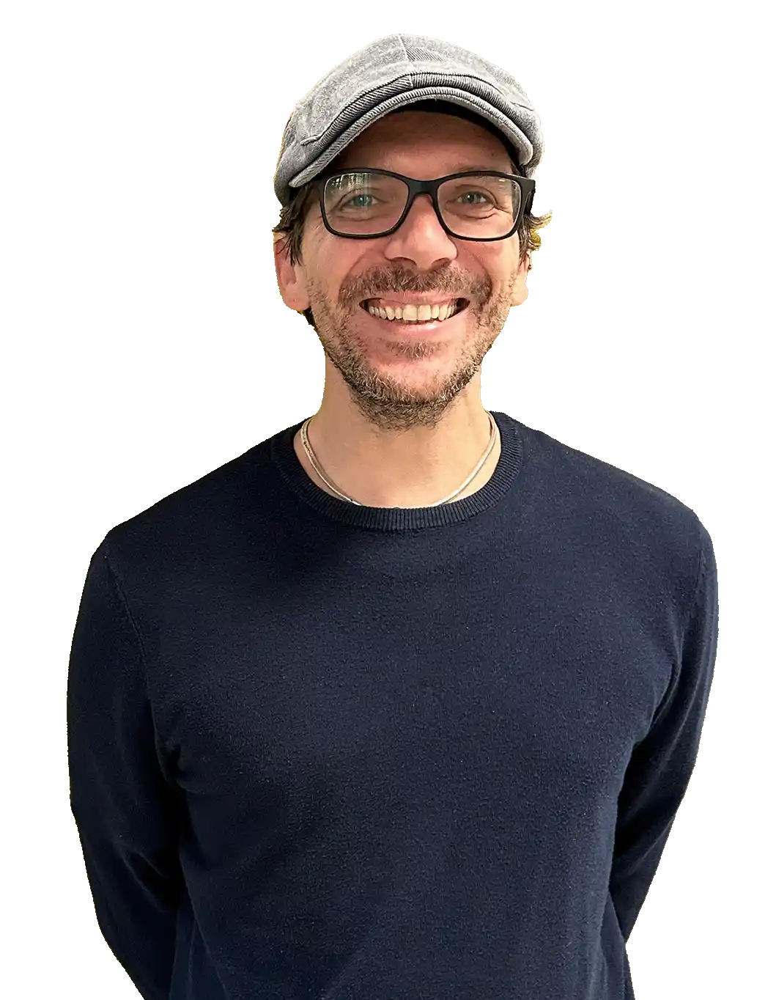
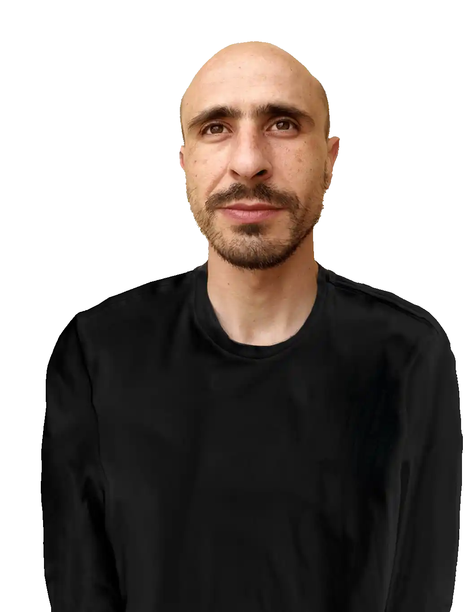
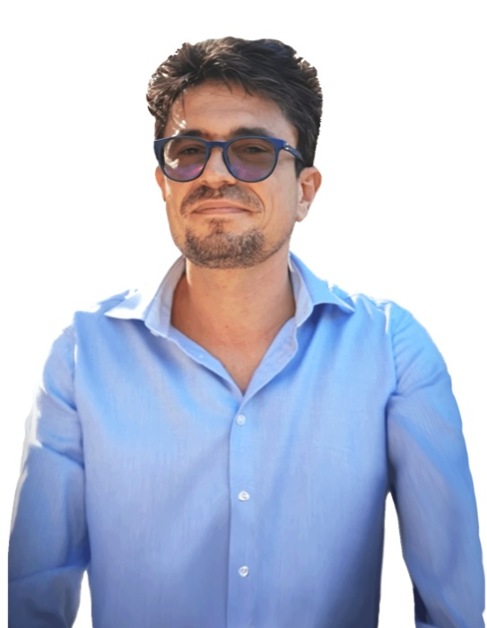
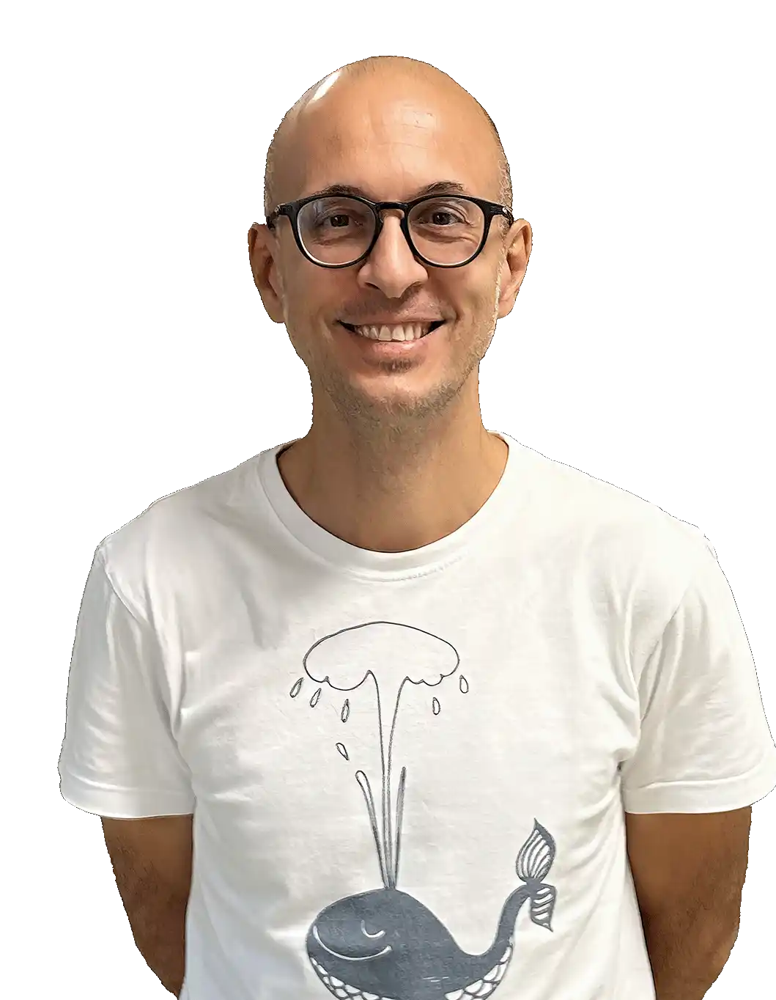

Intelligenza
artificiale che
prende la tua forma.
Non un modello preso dallo scaffale. Reti di moduli di intelligenza, assemblate sul tuo problema e messe alla prova sul tuo caso. Provate dove misurare è più difficile: ambiente e territorio.
Non un modello.
Una rete di moduli.
Ogni problema reale ha molte dimensioni. Componiamo tanti moduli di intelligenza in un'unica rete che li fa parlare tra loro, e che si ricompone da sola quando cambia ciò che devi decidere. Ogni risposta arriva con la sua confidenza, misurata.
Il territorio parla.
La rete lo ascolta.
Satellite, sensori sul campo, meteo, geologia: segnali diversi, ognuno con la sua voce. L'architettura Geo-Driven li fonde in un unico quadro di rischio e lo trasforma in una decisione, con una confidenza che puoi verificare. Scegli un'applicazione e guarda il radar al lavoro.
Provata sui sistemi vivi.
Il banco di prova più duro che esista: leggere organismi viventi, con dati scarsi e rumorosi. Le nostre reti leggono la salute del verde da immagini multispettrali prima che l'occhio veda i sintomi, e scelgono le piante giuste per depurare suolo, acqua e aria.
Dimmi il problema.
Ti mostro la scelta.
Un singolo modulo della rete, in azione: per un problema ambientale, sceglie la natura giusta e l'esito atteso. Moltiplica questo per decine di dimensioni: è la rete.
Cento motori.
Una sola intelligenza.
Dentro ogni rete che costruiamo lavora Ennous: un catalogo di circa cento motori di calcolo, dai più semplici ai più profondi. Per ogni decisione ne sceglie una manciata, i migliori per quel momento, entro un budget di calcolo esplicito. E firma ogni scelta.
Si accende solo ciò che serve
Un'intelligenza
per cliente.
Nessun abbonamento a scatola chiusa. Ogni cliente riceve la propria rete, progettata sul suo problema, misurata sui suoi dati, e sua alla fine del percorso.
Ascolto e progetto
Porti il problema e i dati che hai, anche pochi e imperfetti. Progettiamo la rete di moduli che serve: quali segnali, quali motori, quale decisione deve uscire. Se servono sensori o camere multispettrali, li installiamo noi.
Studio di fattibilitàProva sul campo
La rete gira sul tuo caso reale e si misura: accuratezza, copertura, costi di calcolo. Numeri misurati, non promessi, con una catena di audit che li rende verificabili da terzi. Se non regge la prova, lo vedi subito.
Pilota pagato, esito misuratoResta a te
La rete entra in esercizio con certificati periodici di copertura misurata, utili anche verso banche, autorità e assicurazioni. Oppure prendi in licenza l'architettura brevettata e la porti dentro i tuoi sistemi.
Esercizio · licenzaCostruita e validata con chi la ricerca la fa sul serio.
Reti che diventano prodotti.
Ogni architettura multidimensionale che progettiamo può vivere di vita propria, cucita sul cliente o sul territorio. Queste sono già online: entra e guardale muoversi.
Il territorio, misurato
Rischio idrogeologico, sismica, perdite d'acqua. La rete che ascolta un territorio e ne misura la risposta.
Guarda il radar →Il verde, su misura
Fitorimedio e progettazione del verde per città, imprese e privati. Il modulo ambientale diventato piattaforma.
greeneazy.it →L'intelligenza che orchestra
Il cervello che sceglie e governa i modelli dentro ogni rete. Cento motori, una sola decisione.
ennous.it →Tre fisici e un architetto.
Le reti che vedi le progettiamo, le misuriamo e le firmiamo in prima persona. EcoBubble è nata così: fisica dei sistemi complessi applicata all'ambiente e al territorio.




Che intelligenza
vuoi costruire?
Raccontaci il problema e i dati. Ti diciamo che rete serve, come la proviamo e cosa ti resta in mano.